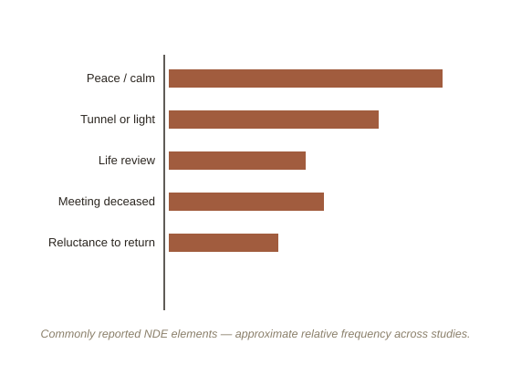

Chapter 1: What People Consistently Report, and Why That's Hard to Explain Either Way
Across cultures, medical eras, and belief systems, people who come close to death — cardiac arrest, severe blood loss, near-drowning — report a strikingly similar cluster of experiences: a sense of leaving the body, moving through a tunnel or toward a light, overwhelming peace, meeting deceased relatives or a being of light, a life review, and reluctance to return. Cardiologist Pim van Lommel ran one of the largest prospective studies of this, following cardiac arrest survivors in Dutch hospitals, and found roughly 1 in 5 reported some form of it — a large enough, consistent enough pattern that dismissing it as pure fabrication has become a harder position to hold than actually explaining it.
Why this is genuinely difficult to explain
The specific puzzle isn't that people have vivid experiences during medical crisis — plenty of altered states do that. It's that some of these experiences are reported from periods when the patient's own brain monitoring showed extremely reduced or flatlined electrical activity, which under standard neuroscience shouldn't be capable of generating the kind of organized, richly detailed experience being reported afterward. Some researchers argue this points to consciousness surviving, at least briefly, independent of normal brain function — the position van Lommel leans toward in Consciousness Beyond Life. Others argue it more likely reflects gaps and inaccuracies in exactly when brain monitoring can detect all relevant activity, or experiences actually occurring in the minutes just before or after the flattest period, then misremembered as simultaneous with it.

The skeptical counter-explanations
Philosopher John Martin Fischer, whose critical work is a useful counterweight to van Lommel's, points to several physiologically grounded explanations that don't require consciousness surviving brain death: REM intrusion (dream-like processes bleeding into waking-adjacent states, also implicated in sleep paralysis), the effects of anesthesia drugs like ketamine (which reliably produces very similar tunnel/light/dissociation experiences in fully conscious, healthy volunteers), and oxygen deprivation's known effects on the visual cortex, which independently produces tunnel-like visual narrowing. None of these fully explains every reported detail on its own, which is exactly why the debate hasn't closed.
What both sides actually agree on
It's worth being precise about where genuine agreement exists: the experiences themselves are real, sincerely reported, remarkably consistent across unrelated cultures, and often profoundly, measurably life-changing for the people who have them — survivors frequently show durable, positive changes in values and reduced fear of death afterward, regardless of how the experience is later explained. What remains contested is the causal question underneath it: are these standard (if unusual) products of a dying or oxygen-starved brain, or evidence of something current neuroscience doesn't yet account for? Both van Lommel and Fischer would agree that's still an open, serious scientific question — not a settled one in either direction.
Try this
Ideas for noticing or testing this in your own life.
- Notice the pattern in how this gets reported in media: next time you see a near-death account presented as either "proof of an afterlife" or "just brain chemistry," notice that both framings usually skip past how much genuine, still-open scientific disagreement is underneath the confident headline.
- Try comparing accounts across sources: read one first-person NDE account and one skeptical clinical summary of the same general phenomenon back to back — notice how much of the raw experience both sides actually agree really happened, versus where they diverge (only on the cause).
Worth pulling on?
A few loose threads from this chapter — if any of these genuinely grab you, that's a good sign of where to go next.
- Ketamine, an anesthetic, reliably produces experiences strikingly similar to reported NDEs in healthy, fully conscious volunteers — one of the strongest pieces of evidence for a pharmacological explanation, though it doesn't rule out other contributing factors.
- The out-of-body sensation frequently reported during NDEs shares a plausible mechanism with lab-inducible OBEs. → Already in the library: Out-of-Body Experiences covers that mechanism directly.
- Survivors' life changes after an NDE are themselves a legitimate, separate research subject — regardless of the metaphysical debate, the psychological aftereffects (reduced death anxiety, shifted values) are consistently measurable and significant.